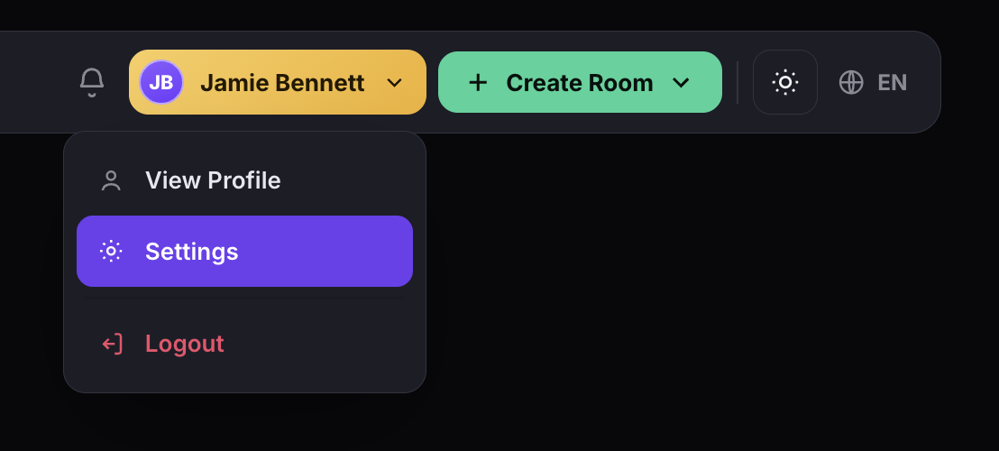
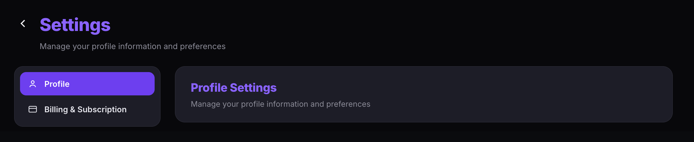
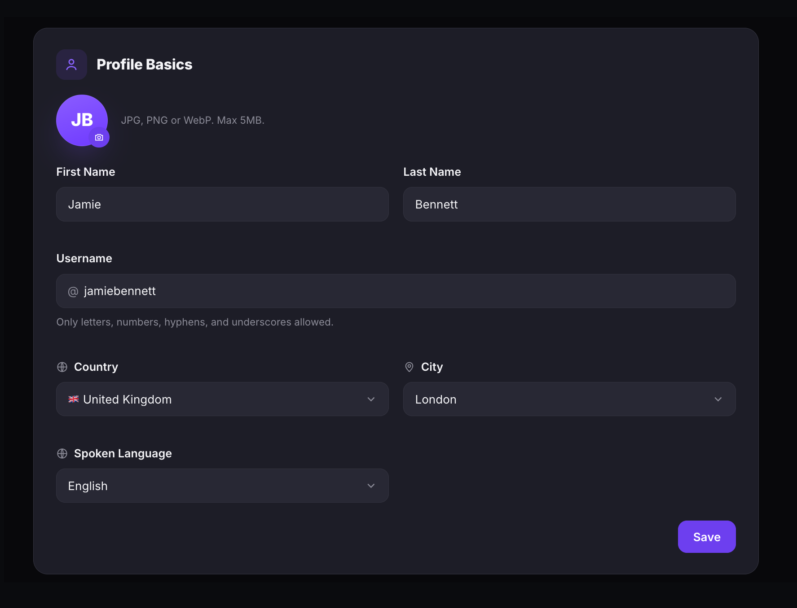
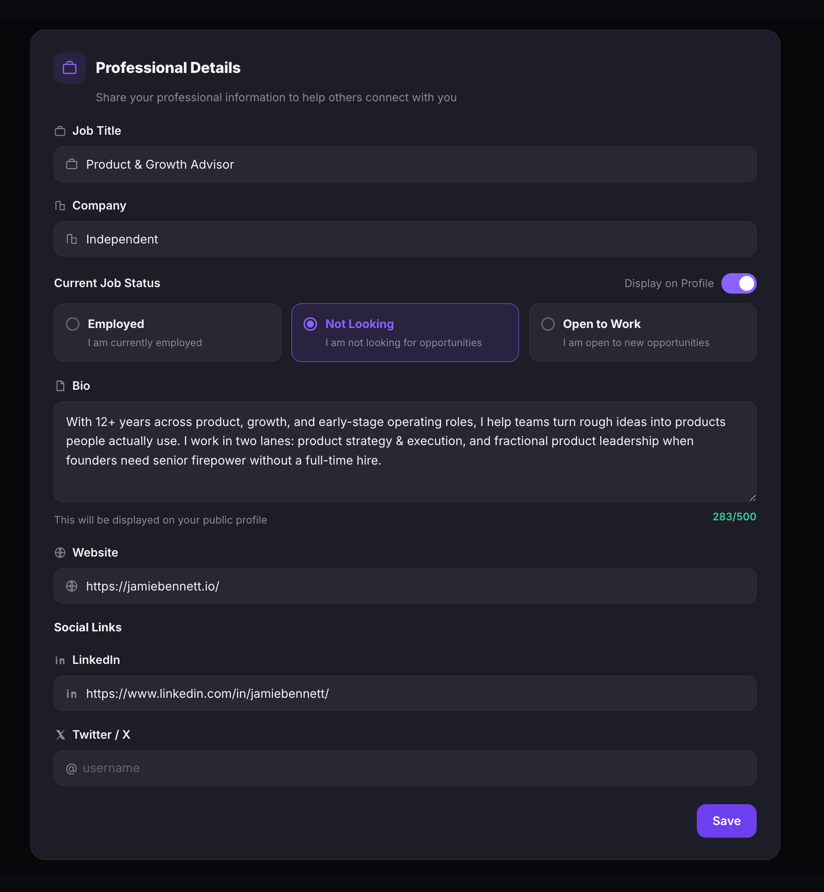
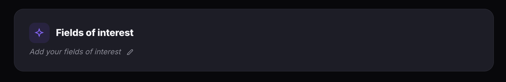
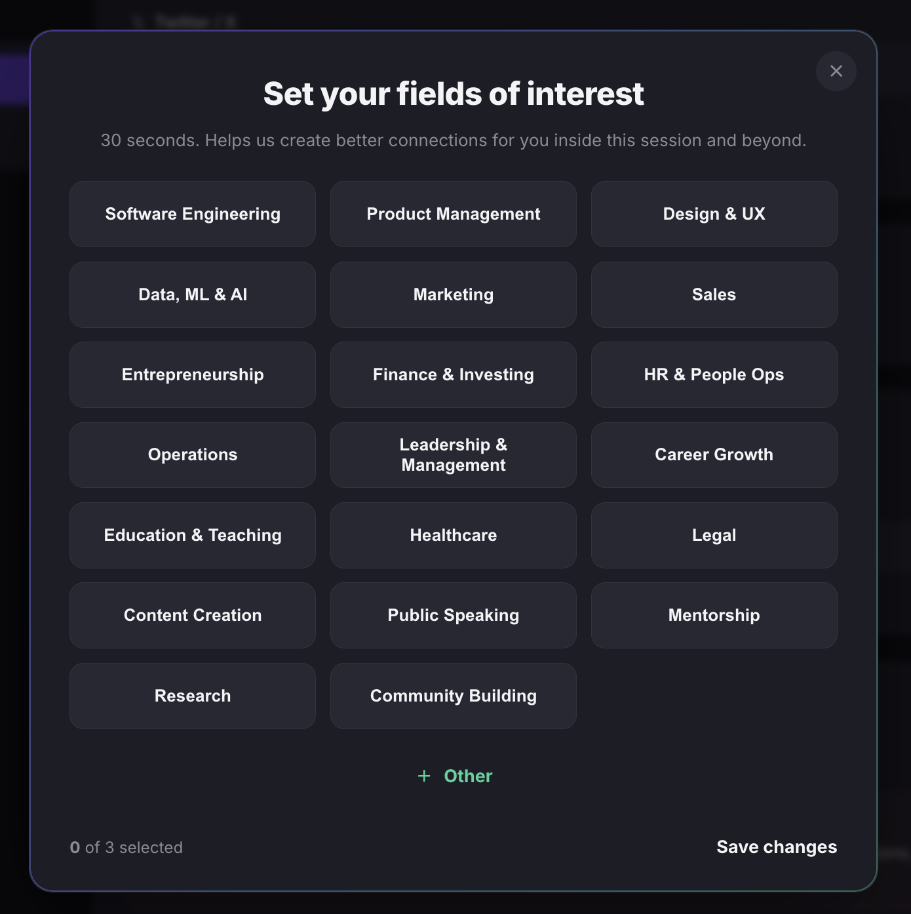
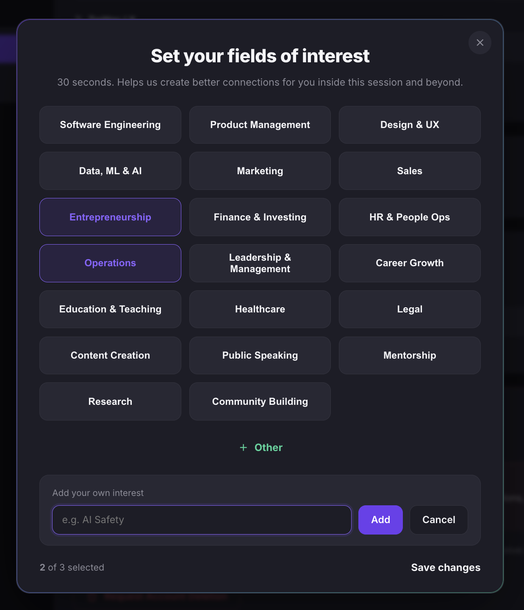
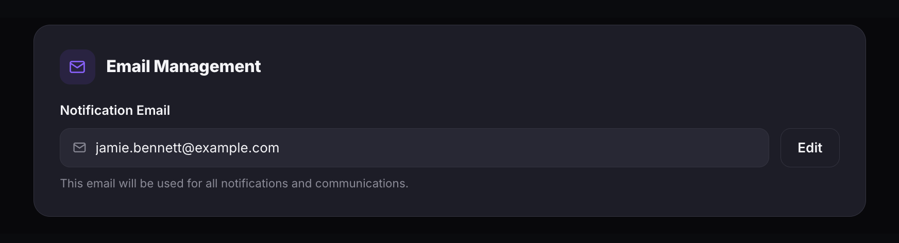
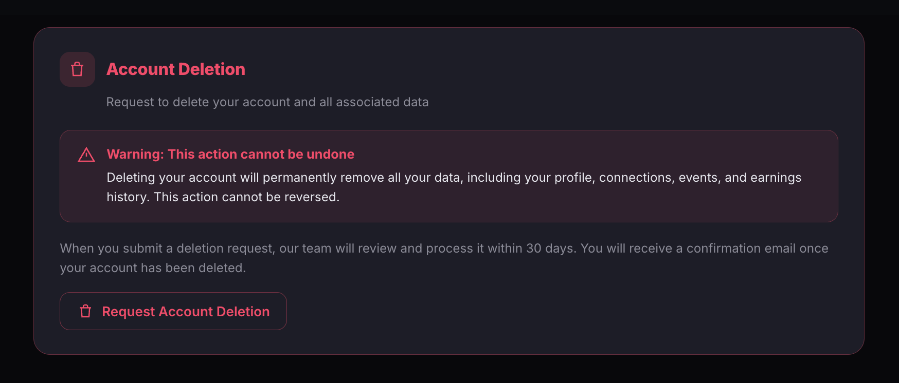
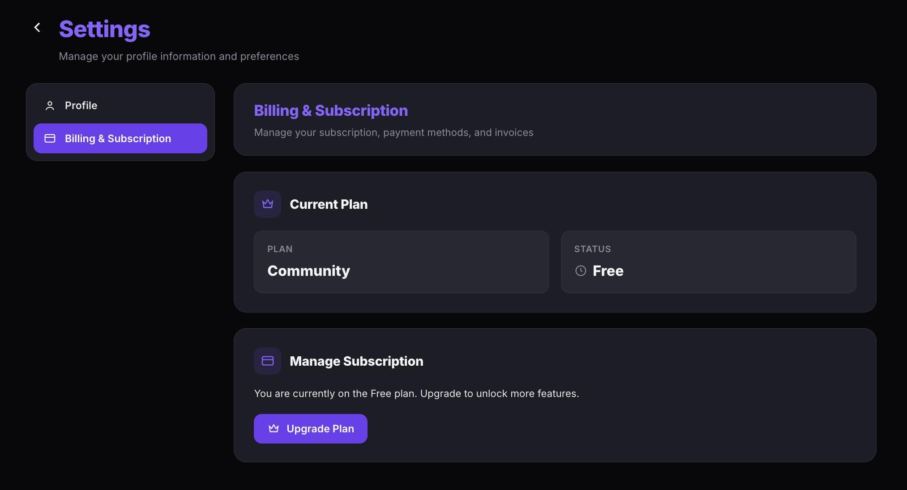

Manage your profile settings
Update your profile photo, name, location, professional details, social links, notification email, and job status from the Settings page. You can also request account deletion from here.
Open your settings
- Click your name in the top navigation bar.
- Select Settings from the dropdown.


Edit your profile basics
- Under Profile Basics, click the camera icon on your profile photo to upload a new image. Accepted formats are JPG, PNG, or WebP, with a maximum size of 5MB.
- Enter your First Name and Last Name.
- Enter a Username. Only letters, numbers, hyphens, and underscores are allowed.
- Select your Country and City from the dropdowns.
- Select your Spoken Language.
- Click Save.

Add your professional details
- Under Professional Details, enter your Job Title and Company.
- Under Current Job Status, select one:
- Employed — you are currently employed.
- Not Looking — you are not looking for opportunities.
- Open to Work — you are open to new opportunities.
- Enter a Bio (up to 500 characters). This is displayed on your public profile.
- Optionally add your Website URL.
- Under Social Links, add your LinkedIn profile URL and Twitter / X username.
- Click Save.

Set your fields of interest
Fields of interest help BrainsMingle create better connections for you inside sessions and beyond. You can select up to three.
- Under Fields of interest, click the pencil icon next to Add your fields of interest.
- In the Set your fields of interest dialog, click any field to select it. You can select up to 3 — the counter at the bottom left shows how many you've chosen.
- To add a field that isn't listed, click + Other, type your interest in the Add your own interest field, and click Add.
- Click Save changes.



Update your notification email
- Under Email Management, your current Notification Email is displayed. This email is used for all notifications and communications.
- To change it, click Edit, enter your new email address, and save.

Delete your account
- Under Account Deletion, click Request Account Deletion.
- The BrainsMingle team reviews and processes your request within 30 days. You receive a confirmation email once your account has been deleted.
Please note: Deleting your account permanently removes all your data, including your profile, connections, events, and earnings history. This action cannot be reversed.

Manage your billing and subscription
The Billing & Subscription tab lets you view your current plan, check your subscription status, and upgrade to unlock more features.
- In the Settings sidebar, select Billing & Subscription.
- Under Current Plan, view your Plan and Status.
- Under Manage Subscription, click Upgrade Plan to unlock more features.
